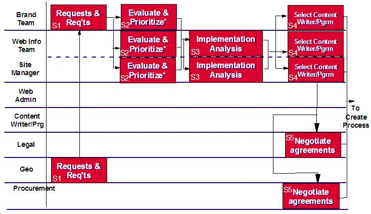

| Example: Content Management Plan for Content Selection Process |
|
 |
| This is an example of a documented Content Selection Process, including Associated Roles and responsibilities. |
|
Relationships
Main Description
Managing or Governing Processes (a.k.a. “The Management Model”) must be defined, documented, staffed and implemented
to address:
-
Selection and Identification of processes to create the Content Model: What is ‘necessary and
sufficient’ to achieve the business objectives? Is there a consistent requirements process that can be used to
identify needs and drive specific, business-oriented actions? Where there are different measures of success
(business models) that govern contributing business units, how will those differences be resolved? Who selects
content, based on what selection criteria? How will effectiveness of selected content be measured and assessed?
For example, consider a large organization, there may be the following units and models:
-
Marketing Analysis and Segmentation.
-
Primary Goal: define opportunities and audience needs.
-
Tactics: Conduct User studies, competitive analyses, Focus groups, Define optimum channels or routes to market
(e.g. web)by audience and opportunity, etc.
-
Measurable results: The number of studies conducted, the number of campaigns completed, the number of inquiries
generated, associated revenues.
-
Product Development
-
Primary Goal: develop “Best of Breed” products.
-
Tactics: Based on customer opportunities and requirements as defined by Marketing Analysis and
Segmentation, acquire skilled resources, develop products, provide supporting content for delivery via the
web, support available products via the web
-
Measurable results (Business Model): Cost-to-revenue, on-time product delivery, volume of customer product
acceptance, number of key hires, Press Analyst/Consultant favorable reviews, high customer satisfaction, low
support costs.
-
Sales (Product and Services)
-
Primary Goal: Drive revenue and profitability by delivering solutions to customers which meet their specific
needs.
-
Tactics: face-face, phone, targeted campaigns; apply industry knowledge, use the web to develop and deliver
product information & pricing, support, etc.
-
Measurable results: Revenue and profitability, customer satisfaction.
In the above scenario, each unit has differing focuses and business models. If web-delivered content is a point of
integration that must cross these boundaries, then all units must agree on the overall objectives, audiences, measurements
of success, formats, vocabulary, etc. as an integral part of web content identification and selection.
-
Acquisition and/or creation of content: Can we create this content? Who can do it? When? If not,
at what price points can it be acquired? What are the “vitality” requirements for selected content, and how
will those requirements be addresses in establishing the life of acquired content?
-
Indexing and description of content: Is there a common vocabulary for content, that can be
applied to indexing and describing acquired /selected content? How are necessary indices identified, justified
and implemented? Cross-references? Thesauri? How is this logical view of the content validated? How are these
elements tested with users for user acceptance, effectiveness, clarity, and results?
-
Storage and Access of content: Who “owns” the content? What are the rights and responsibilities
of the owner? What are the rights and responsibilities of the “users” who access and publish the content? How
is growth and performance tracked and managed? How is content secured? Are there multiple levels of security?
What are the policies and guidelines that govern access (permitted or entitled)?
-
Re-purposing and usage (placement) of content: How is content availability “publicized”
internally? What are the processes for requesting access to content for repurposing? How are rights to
re-purpose verified? How are any work efforts required to repurpose initiated and executed? What additional
maintenance and quality or data integrity processes are needed?
(A re-purposing example: a still color photo taken at high-resolution for a printed marketing brochure, is requested
for use as part of a web campaign. This means it must be accessed, converted to multiple resolution formats (for display,
different destination display devices, printing, etc.), perhaps cropped differently, additional descriptive and/or indexing
information entered, etc.)
-
Distribution and governance of content: How is content distributed? To what audiences? To what
devices? To what countries? Subject to what controls? How is submitted to the production environment? Tested?
Staged? Promoted? What are the update processes (vitality?) What are the “breakage” contingency processes
(i.e., what if the site goes down, what happens, who is called? What if the site is infected with a virus? Just
one element?)
-
Administration and Publishing Workflow – What is the Publishing Workflow? The Operations
Workflow? At what points must those workflows link to external governing reviews (i.e., Legal, Design
Integrity, Quality, Usability etc.)? How are staffing levels, skills, hiring and education plans defined and
implemented to support administration and content workflows? What tools are necessary to support/automate these
workflows?
-
Collaboration and resource sharing for content: How are ‘short-supply’ resources leveraged? What
is the request, justification and scheduling processes? How are dynamic teams built to support specific
projects, both long-term and short term projects.
For example: a web project to support a new product announcement is put in place. Team needs include layout/design,
usability, technical writing, marketing writing, videography, digital art and photo editing, application links for
follow-ups, phone campaign, and “Buying” transaction system, etc. How are these resources identified, provided internally,
acquired as contractors, etc? What are the processes to justify, select and engage contracted resources?Workflow
Publishing Processes (a.k.a. “Content Management” – most common definition)
-
Select and Identify Content within audience requirements and selection parameters – identifies
that basic content needs
-
“Assign” (to Create, Acquire) – establishes the content owner and responsibility for the specific
content, based on the business rules, guidelines and objectives as defined by management, who is
responsible for executing the creation or acquisition of content? This may reflect ongoing informational or
content ownership, or it may be a short-term or finite assignment of responsibility associated with a campaign,
program, event, or time-dependent occurrence.
For example, a manufacturing organization may publish and maintain product information on an ongoing basis; however,
content needs may vary for a seasonal or cyclical catalog publishing effort for that same product base, or, they may be
different still for a short-term marketing campaign for a subset of the products.
Another example would be web-delivered content for any time-dependent event, such as sporting events which have a defined
start and end. An individual (or team) might be assigned on a short-term basis to determine the content needs and determine
the content availability.
-
Create/Acquire – is the actual process of creating or acquiring content. The form of content may
vary widely and is dependent upon the requirements defined by the content publishing owner (above). This
content might be written, photographs (in multiple formats), video, audio, art, or composite “production.”
If the content is to be sourced externally, then the policies and guidelines must be followed, and the necessary
processes executed to acquire it in a timely fashion for its purpose.
-
Submit or “Turn in” – once created or acquired (and stored and indexed, in accordance with the
management processes as defined), the content must be made available to the editor or “collector” of content
who is ultimately responsible for the content publishing or delivery.
-
Edit- the content, once ‘received,’ must pass through a variety of editing cycles, for quality,
format, indexing, etc. The required skills of the editor will vary according to the types of content to be
reviewed.
For example, a text editor must be aware of writing style rules and guides, and apply that knowledge in review of
writing quality, readability, purpose of content and accuracy of content. An art, photo, or audio editor would have similar
responsibilities and would use similar style rules and guides for their individual media; however, the skills and knowledge
base required to “edit” written copy, vs. photography, art, audio, or a multimedia “production” element are very different.
Multi-media editing requires a blend of all of these skills, and it may be the multi-media editor at his point in the
workflow who is responsible for assembling the elements into a publishing or deliverable entity or module.
-
Review/Approve – may link to external and/or governing processes that are beyond the control of
the publishing organization or business unit, and may require maintenance of a specific audit trail, as well as
factored lead time to complete.
These organizations may be within the company, or they may be imposed by a local, state, or federal agency.
For example, completed television segments must be passed to a censorship review group, and must iteratively pass through
the required external censorship process before the airdate. In the same way, where regulating bodies or internal company
controls are put in place, formal review and approval processes must be executed and documented.
Some regulatory segments that may be required include:
-
Corporate level business rules, policies, guidelines
-
Legal, liability, or censorship reviews
-
Layout and Design Integrity (Fonts, Colors, placement, logo integrity, navigation, etc.)
-
Architecture Integrity (Information, Data, Application interfaces, especially for common functions such as
print, search, download, link, etc.)
-
Quality Control
-
Content Accuracy, Source validation
-
Styles or formats (writing style including capitalization, phrasing, voice, spacing, etc.; picture style
(border, description, etc); other styles or formats as appropriate for unique content types.)
-
Language translation and/or globalization (cultural content review)
-
Release for Publication – represents the final step in the creative process and the transition to
actual publication. This release may be formal or informal, depending on the size of the organization; however,
it must be adequate to support any subsequent liability issues, or internal audit requirements.
-
“Publish” – is the actual process of delivering content
-
Define Placement – the actual placement on the page(s) of content must be defined and logically
associated with the content, consistent with the content model and information. This links to the
categorization of the content, its attributes, purpose and placement guidelines.
-
Format (layout/design) as defined – based on the assignment of the placement (above), and within
guidelines as established in the content model and information architecture, the content must be physically
placed or tagged to appear in the location(s) specified.
-
Timing (schedule/life cycle) – also as part of the publishing cycle, the content must be
associated with a particular duration: When will it first appear? When will it (if it will) be updated? When
will it need to be reviewed, if no update schedule?When will it be removed and who must be notified. The
scheduling information and change triggers must be set and associated with each specific piece of content.
-
Storage (Indexing/Description) – Where will this content be stored while in “live” production?
Which locations are upstream? Downstream? On peer locations for performance reasons? How will it be described
for navigational purposes? Based on the information architecture for this content, what indices have to be
updated to enable the appropriate navigation paths to this content? Is there manual indexing that must occur?
Who will do that? When?
-
Measurement processes - provide an iterative, “closed loop cycle”, performed to maintain
alignment of desired results with actual results.
-
Define/refine measurement plan (control/measurement points or streams)
-
Collect results
-
Analyse
-
Define/refine Adjustment/Change
-
Trigger Re-active Change(s)
-
Maintain
-
Schedule
-
Trigger Updates and affiliated maintenance (downstream, upstream, peer/replica sites)
-
Remove/Replace end-of-life content
-
Notify owner
Operational Delivery and Infrastructure Processes (a.k.a. “Technology Model”)
-
Collect, review and manage infrastructure technology requirements and standards
-
Infrastructure request (e.g., infrastructure to support a new site, or expansion of an existing)
-
Content submission
-
Content testing
-
Content staging and “release”
-
Content “promotion”
-
Content maintenance and support (add/change/delete)
-
Core IT processes
-
Daily Operations
-
Site problem determination and escalation processes
-
Site change management processes (request; assess need, risk, value; plan, test, implement)
-
Site backup and recovery processes
Processes Examples - Additional roles and responsibilities must be defined for each of the core processes and
sub-processes, and then these roles and responsibilities must be integrated into a common definition, with a correlation
between positions and definitions of the relationships that support them.
For example, the Content Selection Process does not specify the involvement of an Information Architect. However, there is
a relationship between the Information Architect, who must classify and establish the foundation for the navigational
constructs that will support the delivery of required content to a specific audience, and the Web Information Team/Content
Managers, who identify and select the content.
These relationships must be identified and defined, along with critical linkage or control points.
Content Selection Process

Sample Roles and Responsibilities to support Content Selection
1. Brand Marketing and Technical Support
-
Align web strategy with brand, group and corporate strategies including content strategy
-
Select web channels to be utilized
-
Design web channel strategy and program
-
Define web requirements for audience
-
Define web requirements for brand
-
Initiate and define content requirements
-
Define measurements for site, campaign, etc.
-
Review content for accuracy, brand, etc.
-
Customer satisfaction
2. Web Information Team/Content Managers
-
Manage end-to-end content management process
-
Develop and maintain prioritized content requirements list
-
Develop content plan
-
Define site and content placement and navigation
-
Review content for accuracy, currency, compliance, appropriateness, quality, consistency, brand identity
-
Understand site architecture for all sites that use content
-
Assess measurement data that is collected and make recommendations to Brand Team
-
Ensure that content is up to date and relevant
-
Ensure that corporate content guidelines are met
-
Maintain and update the content management processes
3. Web Administration
-
Responsible for day-to-day operations of the site including deletion and archiving of information
-
Posts content to the site
-
Collect measurement data and generates reports on traffic patterns, user behavior, etc.
-
Responsible for the development, deployment, integration, testing and maintenance of the site tools and
technology
-
Define and implements the database strategy
4. Content Creators
-
Create, write, edit web content and ensure technical accuracy of the content including required metadata
-
Adapt existing marketing collateral, etc for use on the Web
-
Update content - keeps current and fresh
5. Site Manager
-
Review content for appropriateness and consistency with site
-
Responsible for ensuring that corporate content guidelines are met
-
Develop of project plan
-
Responsible for implementation of initiatives on the site
-
Define site functionality
-
Resolve problems between the Web Administration Team and Web Information Team and Brand Team
6. Legal
Additional samples are available in the Content Management Process Guide, which includes definition of:
-
Methodology
-
Sample Content Creation Process
-
Sample Content Maintenance Process
-
Sample Content Distribution Process
-
Summary of Roles & Responsibilities
-
Overview of the Line of Visibility methodology and charts
Technology Requirements
PROCESS
|
TECHNICAL FUNCTIONAL REQUIREMENTS
|
Enabling: Information Architecture
|
Primary and secondary classifications (basis for storage, retrieval, indexing, navigation)
Input and publishing templates, style libraries, guidelines, design and creation. Writing and presentation
guidelines to support creation consistent with branding and image plan
Data import and restructuring and/or repurposing
|
Creation
|
Support for multiple content types – graphics, text, audio and video
Workflow process for review, editing and approval by both internal and external governing groups (format
& design, legal, branding, quality, etc.)
|
Acquisition
|
Data import and restructuring
Access to legacy systems
|
Storage
|
Data conversion and access
Data indexing
Content identification (of entities), attributes, relationships
Legacy integration
|
User Management
|
Access rights management
Permission granting
Indemnification
|
Publication
|
Integration of multiple content types
Testing of links, performance
Versioning
Rollback
|
Maintenance
|
Definition of standard change cycle
Change triggers (automated and manual)
Change notification
Content removal/archiving
|
|
More Information
© Copyright IBM Corp. 1987, 2012 All Rights Reserved
Property of IBM
These materials are intended only for use as part of an IBM engagement |
|